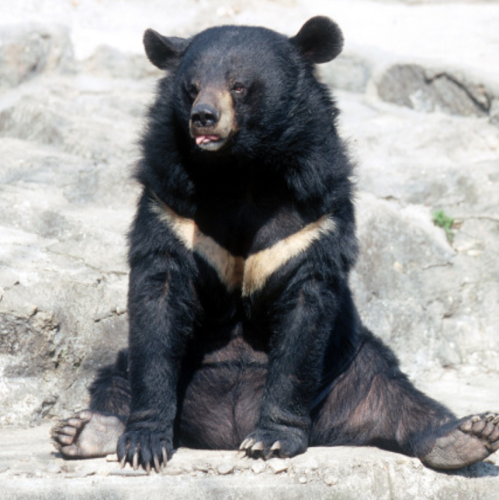

🐻 반달 가슴곰상
🐻 반달가슴곰처럼 포근하고 귀여운 당신!
반달가슴곰은 아시아 흑곰의 아종입니다.
반달가슴곰은 아시아 흑곰의 아종입니다.
낙엽 활엽수가 발달한 산림에 사는 곰과의 포유동물로 가슴에 흰
초승달 무늬가 특징이기도 합니다. 백두대간을 중심으로 한반도 전역
살았지만 일제강점기 때 해수구제 정책으로 많은 수가 사라졌고
분단 이후로는 웅담(곰의 쓸개)이 비싼 약재로 거래되었기 때문에
밀렵이 끊이지 않아 멸종 직전에 이르렀습니다. 현재 지리산, 설악산,
오대산, 태백산, 강원도 DMZ 지역에 적은 수가 남아 있고
복원을 위해 노력중입니다. 세계적으로 중국 북동부, 러시아 연해주 ·
아무르 지역에 분포합니다. 나무굴이나 동굴에서 겨울잠을 자며
동면 중에 새끼를 낳는답니다.
초승달 무늬가 특징이기도 합니다. 백두대간을 중심으로 한반도 전역
살았지만 일제강점기 때 해수구제 정책으로 많은 수가 사라졌고
분단 이후로는 웅담(곰의 쓸개)이 비싼 약재로 거래되었기 때문에
밀렵이 끊이지 않아 멸종 직전에 이르렀습니다. 현재 지리산, 설악산,
오대산, 태백산, 강원도 DMZ 지역에 적은 수가 남아 있고
복원을 위해 노력중입니다. 세계적으로 중국 북동부, 러시아 연해주 ·
아무르 지역에 분포합니다. 나무굴이나 동굴에서 겨울잠을 자며
동면 중에 새끼를 낳는답니다.
생김새
몸길이 약 1.9 m, 꼬리길이 약 8cm로 불곰에 비해 작은 크기를 가지고
있다. 온몸이 광택 있는 검은색이며, 앞가슴에 반달 모양의 하얀
V자형 무늬가 있다. 이 반달무늬는 개체에 따라 변이가 있어
큰 것도 있고 작은 것도 있으며, 드물게는 반달무늬가 없는 개체도 있다.
코는 뾰족하고 짧으며, 이마가 넓다. 귀는 비교적 크고 옆으로
돌출했다. 발은 비교적 약하며, 발가락은 불곰보다 짧지만 발톱은
날카롭고 예리하며 구부러졌다. 가슴에 V자 모양의 반달무늬가
특징이다. 가슴의 반달무늬는 개체에 따라 그 크기나
형태에서 조금씩 차이를 보인다. 이마가 넓고 귀가 비교적 큰 편이다.
어깨와 목의 양 옆에 긴 털이 나 있다.
있다. 온몸이 광택 있는 검은색이며, 앞가슴에 반달 모양의 하얀
V자형 무늬가 있다. 이 반달무늬는 개체에 따라 변이가 있어
큰 것도 있고 작은 것도 있으며, 드물게는 반달무늬가 없는 개체도 있다.
코는 뾰족하고 짧으며, 이마가 넓다. 귀는 비교적 크고 옆으로
돌출했다. 발은 비교적 약하며, 발가락은 불곰보다 짧지만 발톱은
날카롭고 예리하며 구부러졌다. 가슴에 V자 모양의 반달무늬가
특징이다. 가슴의 반달무늬는 개체에 따라 그 크기나
형태에서 조금씩 차이를 보인다. 이마가 넓고 귀가 비교적 큰 편이다.
어깨와 목의 양 옆에 긴 털이 나 있다.
먹이
주로 식물성 먹이로서 벚나무열매, 머루, 산딸기, 다래 등을 먹는데
가장 좋아하는 것은 도토리이다. 봄에는 산림에서 나무의
어린 싹, 잎, 뿌리를 캐 먹으며 썩은 나무를 파서 곤충의
애벌레와 개미, 곤충의 번데기 등을 먹는다. 이외에 개울에서 가재나 작은
물고기를 잡아먹으며 조류의 알이나 새끼도 잡아먹는다.
산간벽지에서는 농경지에 내려와 옥수수 등의 농작물을 먹는다.
후각과 청각이 매우 발달하여 이를 이용해 섭식생활을 한다.
야행성이지만 시기에 따라 낮에 섭식활동을 하기도 하며,
식물성 먹이를 선호한다. 과일, 도토리를 특히 좋아한다.
가장 좋아하는 것은 도토리이다. 봄에는 산림에서 나무의
어린 싹, 잎, 뿌리를 캐 먹으며 썩은 나무를 파서 곤충의
애벌레와 개미, 곤충의 번데기 등을 먹는다. 이외에 개울에서 가재나 작은
물고기를 잡아먹으며 조류의 알이나 새끼도 잡아먹는다.
산간벽지에서는 농경지에 내려와 옥수수 등의 농작물을 먹는다.
후각과 청각이 매우 발달하여 이를 이용해 섭식생활을 한다.
야행성이지만 시기에 따라 낮에 섭식활동을 하기도 하며,
식물성 먹이를 선호한다. 과일, 도토리를 특히 좋아한다.
번식
번식시기는 7∼9월, 임신기간은 210일이며 2∼3월에
2마리의 새끼를 낳는다. 입동 1주일 전후로 바위굴이나 큰나무의
구새통에 들어가 겨울잠을 잔다. 동면에 들어간 곰은 3월 중하순까지
굴에서 잘 나오지 않는다. 동면에서 깨어나면 내장을 깨끗이 하기
위하여 참가막살이나 쥐다래나무의 열매와 바위이끼 같은 것을 먹는다.
2마리의 새끼를 낳는다. 입동 1주일 전후로 바위굴이나 큰나무의
구새통에 들어가 겨울잠을 잔다. 동면에 들어간 곰은 3월 중하순까지
굴에서 잘 나오지 않는다. 동면에서 깨어나면 내장을 깨끗이 하기
위하여 참가막살이나 쥐다래나무의 열매와 바위이끼 같은 것을 먹는다.
거주지
한국 ·중국 북동부 ·연해주 등지에 분포한다. 한국에서는 지리산 북부
전역의 1천5백m 이상인 고산지대 활엽수림에 서식한다.
과실이나 도토리와 같은 열매가 많은 밀림지대에서 서식한다.
한해를 마무리하고 또 다음해를 나기위한 동면
겨울의 시작을 전후로 해서 바위굴이나 나무구멍을 찾아 동면에 들어간다.
동면 첫 달에는 얕은 잠을 자지만 첫달 이후로는 깊은 잠이 들게 된다.
먹을 것이 적어 지방을 충분히 축적하지 못하면 동면하지 않고
겨울 내내 먹이를 찾아다닌다.
전역의 1천5백m 이상인 고산지대 활엽수림에 서식한다.
과실이나 도토리와 같은 열매가 많은 밀림지대에서 서식한다.
한해를 마무리하고 또 다음해를 나기위한 동면
겨울의 시작을 전후로 해서 바위굴이나 나무구멍을 찾아 동면에 들어간다.
동면 첫 달에는 얕은 잠을 자지만 첫달 이후로는 깊은 잠이 들게 된다.
먹을 것이 적어 지방을 충분히 축적하지 못하면 동면하지 않고
겨울 내내 먹이를 찾아다닌다.
나무에 홈을 내며 위로!
나무에 오르는 것을 좋아한다. 날카로운 발톱을 이용해
나무에 홈을 내어 안정감 있게 오를 수 있다. 또한 발톱을
이용해 나무껍질을 벗겨서 수액을 얻기도 한다.
나무에 홈을 내어 안정감 있게 오를 수 있다. 또한 발톱을
이용해 나무껍질을 벗겨서 수액을 얻기도 한다.
상사리
나뭇가지를 꺽어다 나무 위에 지름 1~2m 가량의 둥지를 짓는데
이를 "상사리"라고 부른다. 이를 이용해 낮 동안 휴식을 취하거나 잠을 잔다.
이를 "상사리"라고 부른다. 이를 이용해 낮 동안 휴식을 취하거나 잠을 잔다.
멸종위기
그러나 남획(濫獲)과 6 ·25전쟁 등으로 인해서 서식수가 격감하여
절멸의 위기에 있다. 1982년 11월 16일 천연기념물 제329호로 지정되었고,
2012년 7월 27일 멸종위기 야생생물 1급으로 지정되어 보호받고 있다
절멸의 위기에 있다. 1982년 11월 16일 천연기념물 제329호로 지정되었고,
2012년 7월 27일 멸종위기 야생생물 1급으로 지정되어 보호받고 있다
복원 사업
반달가슴곰 복원 사업은 2004년부터 시작해 지금까지 다양한 활동을
하고 있다. 복원 사업의 성과로 최근 74개체의 반달가슴곰이 확인
되었으며, 자연에 서식하는 반달가슴곰의 활동 범위도 확대되고 있다.
이제는 반달가슴곰의 서식 환경의 안정화를 위한 불법 엽구 수거가
이뤄져야 한다. 엽구 - 짐승을 사냥하는 데에 쓰는 도구로, 올무, 창애, 뱀그물
등을 의미 밀렵, 밀거래를 목적으로 설치된 불법 엽구는 반달 가슴곰뿐만
아니라 다른 야생동물들도 다치게 하거나 심하면 죽음에까지
이르게 할 수도 있다. 그리고 인간에게도 심각한 부상을
입힐 수 있다. 불법 엽구 수거는 낙동강유역환경청(자연환경과),
지자체, 국립공원공단, 민간단체 등 여러 기관이 협력하여
반달가슴곰의 출연지 및 서식지인 거창군, 합천군, 함양군, 진주시에서
진행되고 있다
하고 있다. 복원 사업의 성과로 최근 74개체의 반달가슴곰이 확인
되었으며, 자연에 서식하는 반달가슴곰의 활동 범위도 확대되고 있다.
이제는 반달가슴곰의 서식 환경의 안정화를 위한 불법 엽구 수거가
이뤄져야 한다. 엽구 - 짐승을 사냥하는 데에 쓰는 도구로, 올무, 창애, 뱀그물
등을 의미 밀렵, 밀거래를 목적으로 설치된 불법 엽구는 반달 가슴곰뿐만
아니라 다른 야생동물들도 다치게 하거나 심하면 죽음에까지
이르게 할 수도 있다. 그리고 인간에게도 심각한 부상을
입힐 수 있다. 불법 엽구 수거는 낙동강유역환경청(자연환경과),
지자체, 국립공원공단, 민간단체 등 여러 기관이 협력하여
반달가슴곰의 출연지 및 서식지인 거창군, 합천군, 함양군, 진주시에서
진행되고 있다